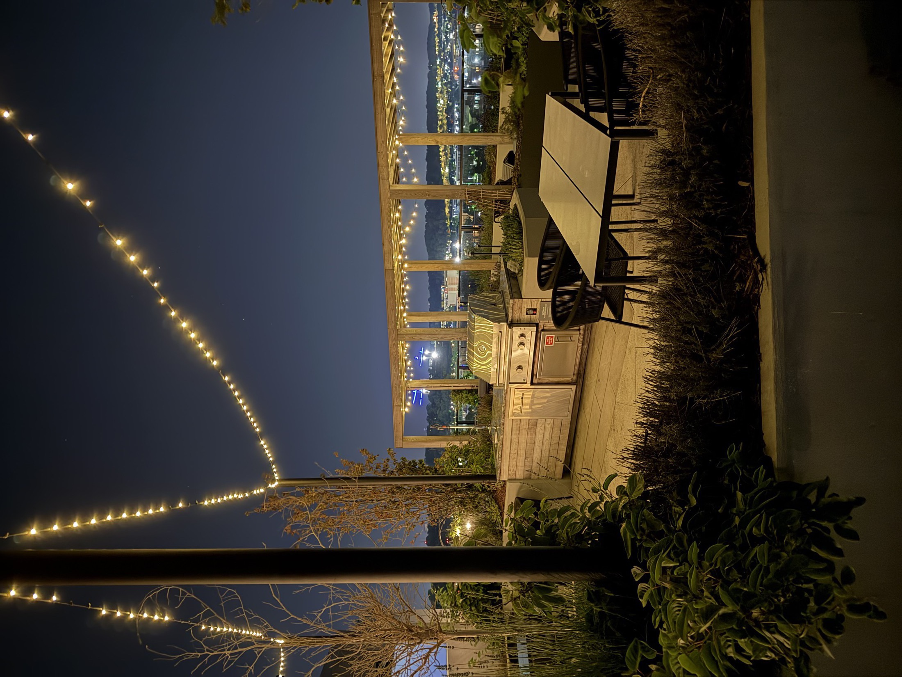
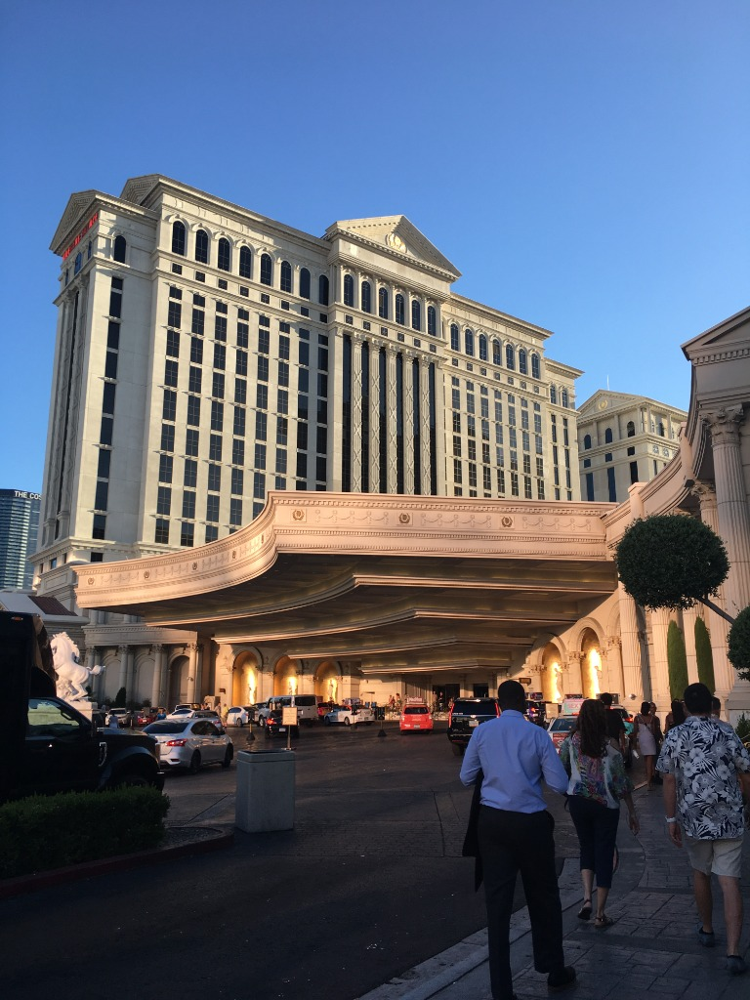
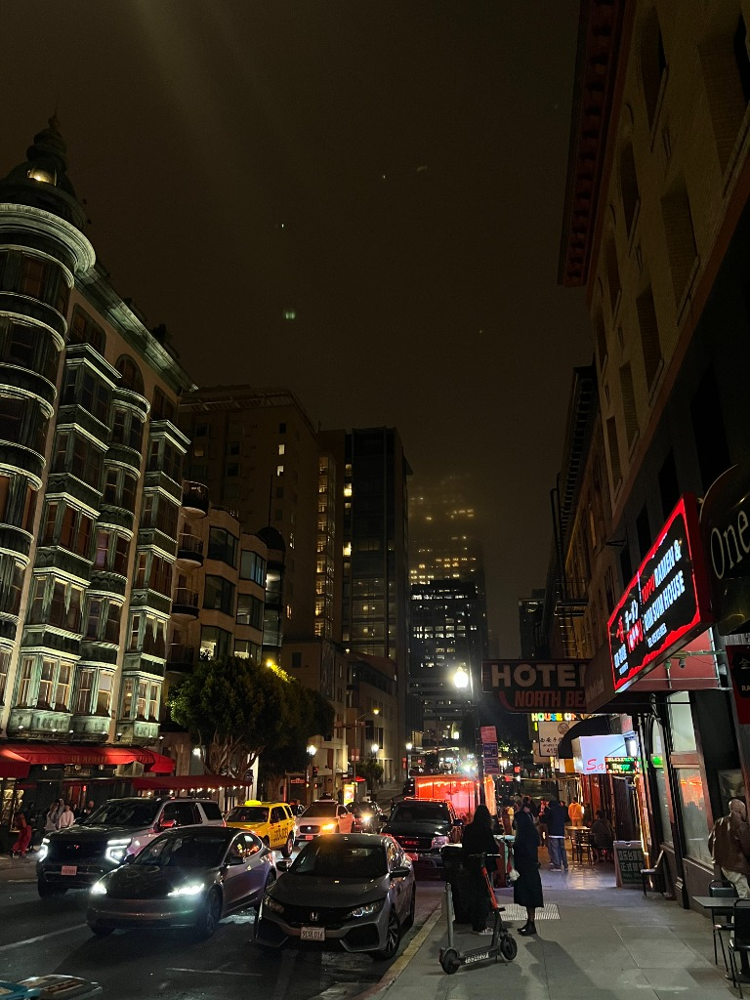

Roger McKenzie
Software developer and content creator in Gainesville, Florida. I study Information Systems at the University of Florida.
About me
I’m from Miami and the first in my family to go to college. I study Information Systems at the University of Florida, with minors in Computer Science and Statistics.
Software engineering intern at Amazon in Arlington, Virginia, in 2025 and 2026. Lead developer at The Agency at UF since April 2026.
Off the clock: cooking, climbing, gaming and tinkering with a home server. I also make videos about tech on YouTube.
Apps I’ve built
Studio Stack
Production scheduling, brief intake and gear reservations for The Agency at UF. As lead developer I built the cloud backend with role-based sign-in and workflow tracking. Built with TypeScript, AWS Lambda, PostgreSQL and S3.
ResMatch
Tailors a résumé to the job description you’re applying for. Built with Next.js, TypeScript and OpenAI.
SnapCal
A Chrome extension that turns events on a webpage into Google Calendar entries, with a preview to check before saving. Built with Gemini and Google Calendar.
Jenna’s Recipes
Search recipes by ingredient, get Gemini suggestions and keep a shopping list between visits. Built with React, TypeScript and MUI.
Photographs



Video: AfroTech 2025, Houston, TX. More on YouTube.
Résumé
Two software engineering internships at Amazon, and lead developer at The Agency at UF. Open in Google Docs or download the PDF.
Education
University of Florida, Gainesville. B.S.B.A. in Information Systems, minors in Computer Science and Statistics. Graduating April 2028.
Certifications: AWS Certified Cloud Practitioner, AWS Certified AI Practitioner, NVIDIA Fundamentals of Deep Learning.
Software Development Engineer Intern, Amazon
Arlington, Virginia. May to August 2026.
- Designed the AWS infrastructure, security and data layers for a serverless machine-learning recommendation service that replaced a manually tuned evaluator-ranking heuristic, reducing manual evaluator outreach by 37%.
- Built the CDK infrastructure package and production CI/CD pipeline from scratch, including an encrypted DynamoDB feature store migrated from a legacy table with zero downtime.
- Hardened S3 inference-log storage with blocked public access, TLS, rotating customer-managed KMS keys, versioning and retention policies.
- Architected a cross-account inference API (Fastify, TypeScript, Lambda) with SigV4 IAM authorization, Zod validation and per-client throttling, and took it through Amazon’s Application Security Review and Operational Readiness Review.
Software Development Engineer Intern, Amazon
Arlington, Virginia. May to August 2025.
- Built APEX, a full-stack A/B testing platform (React, TypeScript, tRPC, AWS Lambda, CloudFront, CDK) that replaced manual experiment planning for email and SMS campaigns reaching over 1 million prospective candidates.
- Engineered experiment creation with validated multi-arm forms, up to 100 treatment variations and live sample-size feedback at 80% power and 95% confidence.
- Improved frontend reliability by removing flaky tests, raising code-coverage thresholds and writing Vitest and React Testing Library suites.
Lead Developer, The Agency at UF
Gainesville, Florida. April 2026 to present.
- Leads the architecture and delivery of two internal platforms, Studio Stack and Research Resourcing, which replaced spreadsheet coordination across three agency departments.
- Built Studio Stack’s cloud backend on Cognito, API Gateway, Lambda, RDS PostgreSQL and S3, for role-based sign-in, workflow tracking, brief intake and production scheduling.
- Built a Slack-integrated AI resourcing agent (TypeScript, Lambda, DynamoDB, OpenAI API) that ranks researchers by availability and qualifications and syncs approvals to Excel, cutting turnaround from hours to seconds.
Skills
Languages: TypeScript, JavaScript, Python, C++, Java, SQL. Cloud and tools: AWS (Lambda, API Gateway, S3, DynamoDB, RDS, Cognito, IAM, CloudWatch, CDK), Docker, Git, Vercel. Frameworks: React, Next.js, Node.js, Fastify, FastAPI, tRPC, Tailwind CSS, Zod.
Get in touch
Email me about internships, collaborations or photo work: roger@rogermckz.dev